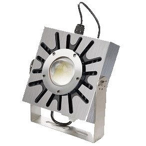
雲端服務
利用雲端的即時連線系統，讓您感受真的正科技智能生活，透過行動裝置/手機可操控智慧家庭中的各類電器產品！其中包括出門忘記關的電視，夏天回家前先開冷氣， 在早上睡醒前幫您煮好咖啡... 透過雲端，隨心所欲、隨時隨地的長空您的生活瑣事。
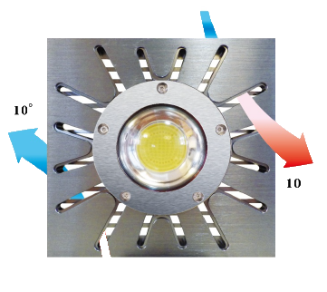
即時監控
即時監控家中的每個智慧家電，長空家中所有的電器使用資訊，了解耗電量等等。監控並保護家中用電狀況、自動切屋但過載的電源，監視任何不正常使用的電量， 家中一氧化碳或二氧化碳的濃度，甚至監控家中魚缸的生態維持系統！
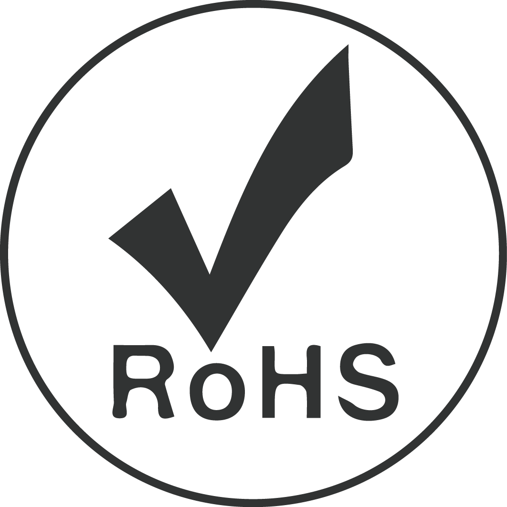
完整家用系統
利用 QR code 即可輕鬆的分享資訊給家中的成員，在家用的 App 系統上，並沒有複雜或高難度的介面，快速且低成本的分享，讓大家都能對家中的用電狀況相當了解， 並各自盡一份心力！
廣泛的應用領域
滿足不同族群和使用的需求
依據不同的生活型態、族群，智能系統有不同的方案滿足您的需求，諸如：家庭個人、公司企業機構、建案/裝潢業者、民宿/社區大樓、開發人員...等等。 不同的使用場合 ASE Intech 提供您不同的方案，讓系統完整的嵌入在您的生活中。
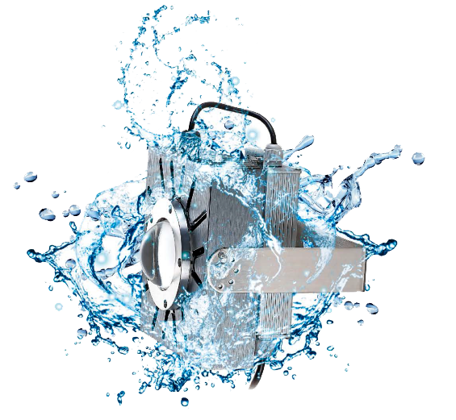
各種監測、感測器
多種選擇的智能監測器
ASE Intech 擁有多種的智能監測器供您選擇，選擇您最在意的項目，逐步的建起屬於自己的智慧家庭系統。
智慧家庭系統工程服務
ASE 節能照明系統工程服務，除了提供智慧家庭的設備，還包含了完整的 節能服務 、 綠色能源 、 智能監控 、 修繕改裝 四大服務範疇，依照不同的需求，一次性地為您量身訂做完整的能源管理系統，無論是舊式系統改裝、全新的系統建置，ASE 皆有相關的專業服務。
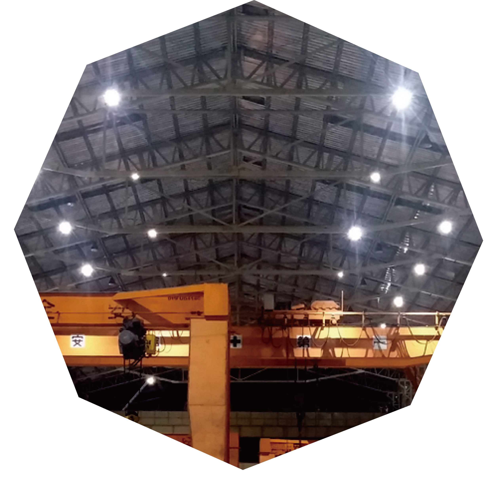

ESCO 合作模式
富有彈性的能源系統工程服務合約
ASE 透過與銀行、租賃公司等第三方保證的方式，與您簽署對雙方都最有保障的合約，分期支付您的工程款項能讓系統工程的效益感受最大化，不必一次支付整筆的工程費用。另外銀行、租賃公司依約監督 ASE 完成合約中的系統工程，保障您能獲得最專業、最完善的 ASE 能源系統工程服務。
詳細瞭解 ESCO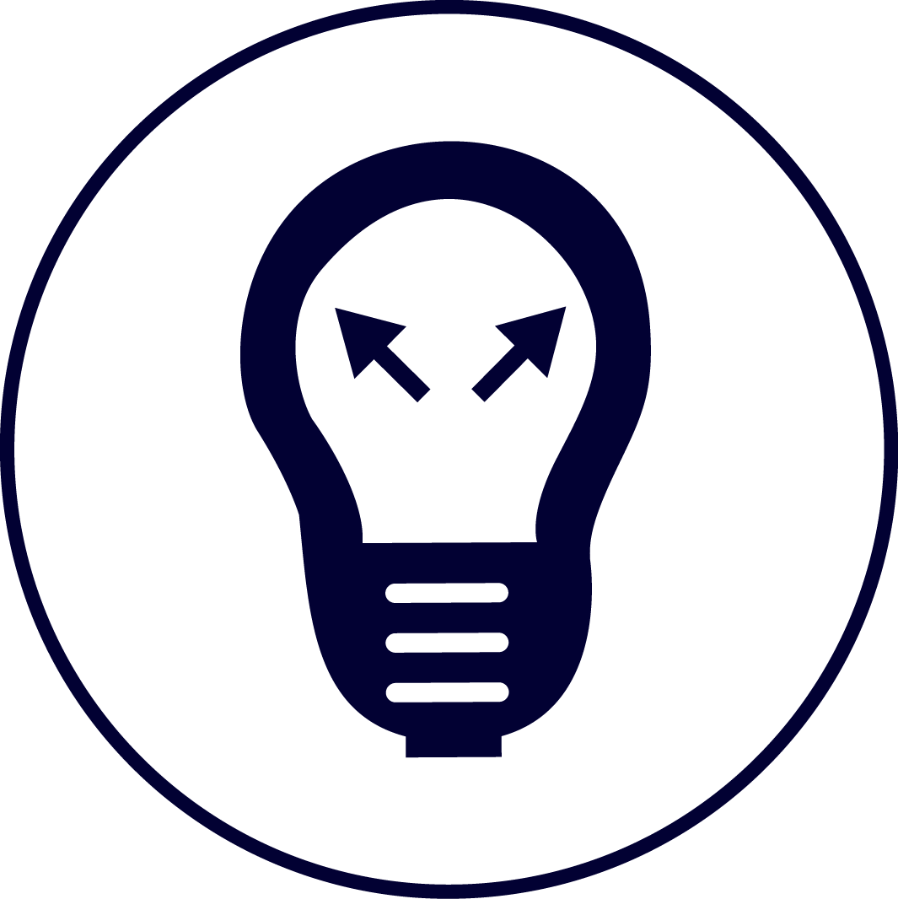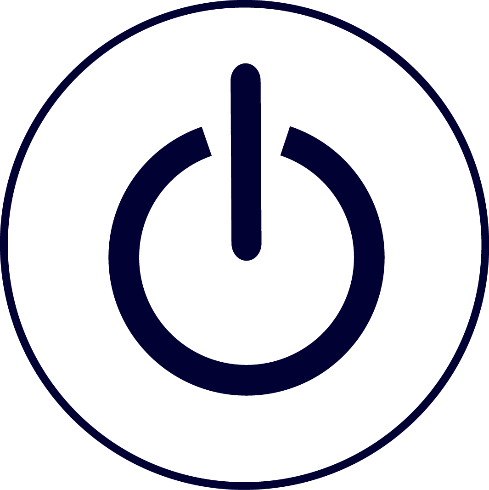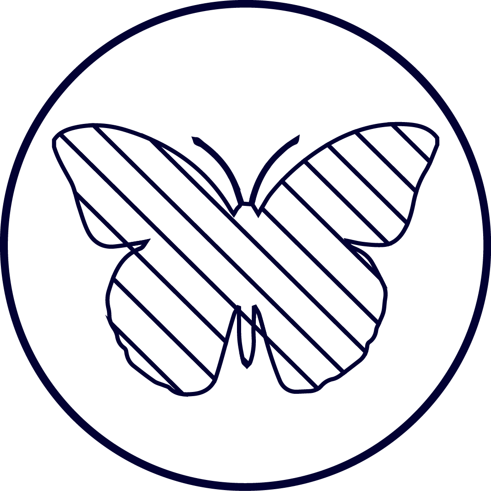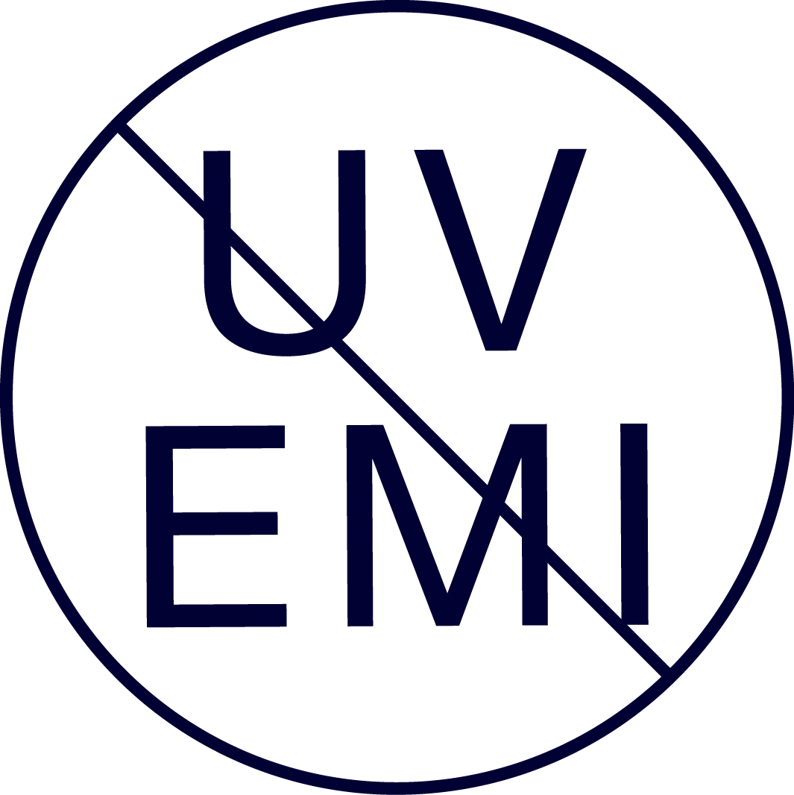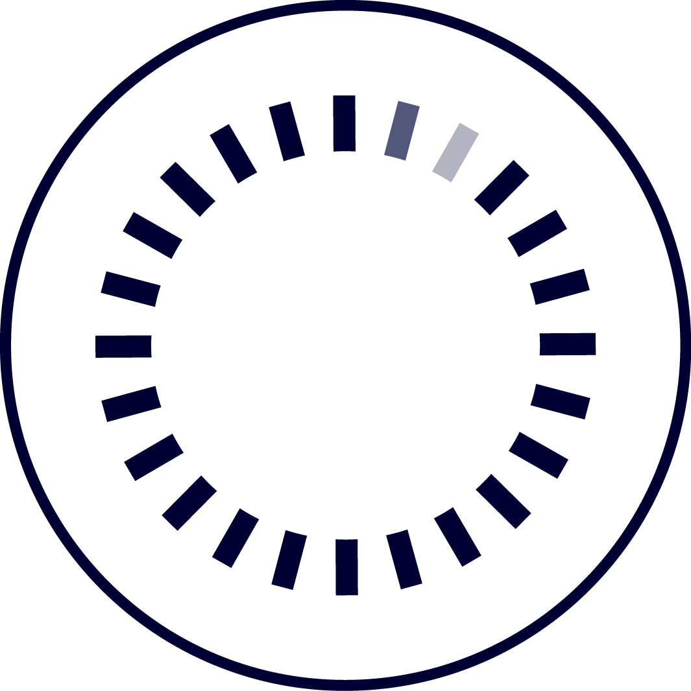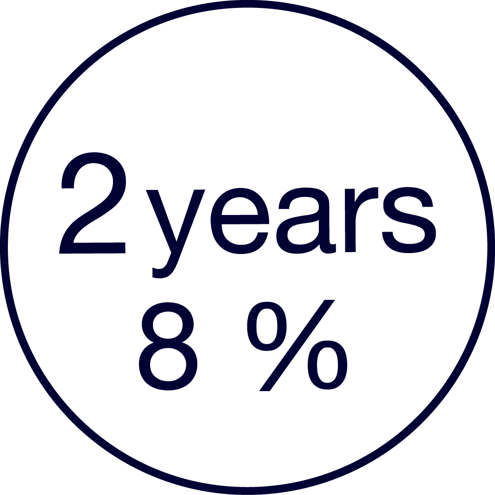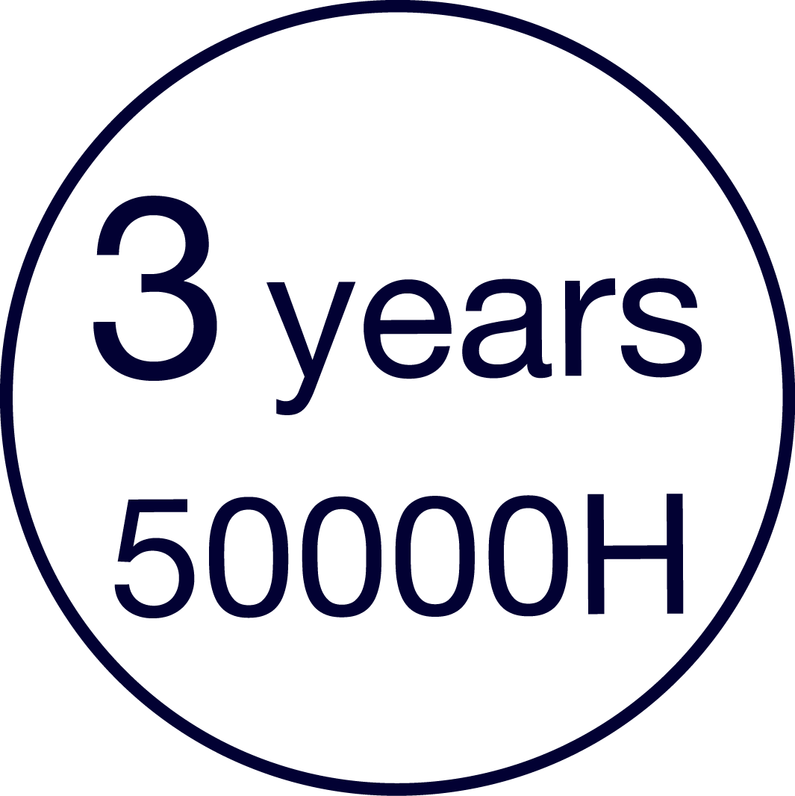